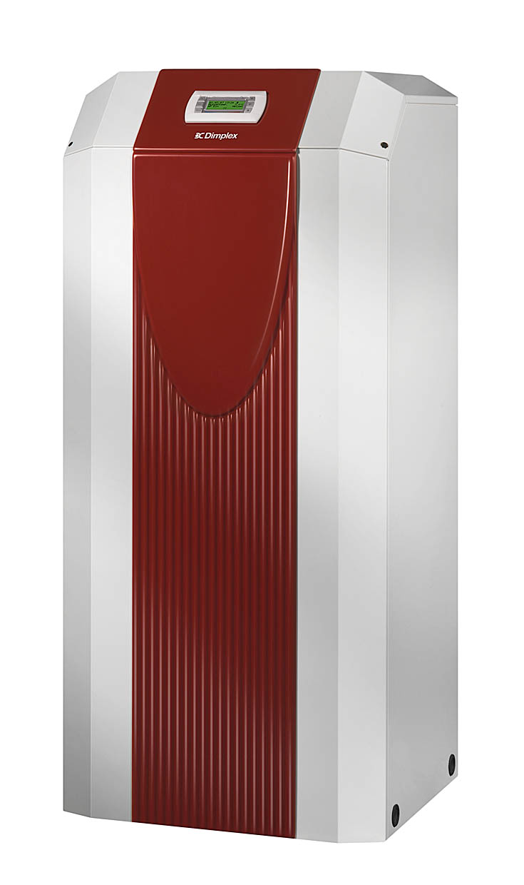

Ogólny opis prac inżynieryjnych.. Ogólny opis prac inżynieryjnych.. Ogólny opis prac inżynieryjnych.. Ogólny opis prac inżynieryjnych.. Ogólny opis prac inżynieryjnych.. Ogólny opis prac inżynieryjnych.. Ogólny opis prac inżynieryjnych.. Ogólny opis prac inżynieryjnych.. Ogólny opis prac inżynieryjnych.. Ogólny opis prac inżynieryjnych.. Ogólny opis prac inżynieryjnych.. Ogólny opis prac inżynieryjnych.. Ogólny opis prac inżynieryjnych.. Ogólny opis prac inżynieryjnych.. Ogólny opis prac inżynieryjnych.. Ogólny opis prac inżynieryjnych.. Ogólny opis prac inżynieryjnych.. Ogólny opis prac inżynieryjnych.. Ogólny opis prac inżynieryjnych.. Ogólny opis prac inżynieryjnych.. Ogólny opis prac inżynieryjnych.. Ogólny opis prac inżynieryjnych.. Ogólny opis prac inżynieryjnych.. Ogólny opis prac inżynieryjnych.. Ogólny opis prac inżynieryjnych.. Ogólny opis prac inżynieryjnych.. Ogólny opis prac inżynieryjnych.. Ogólny opis prac inżynieryjnych.. Ogólny opis prac inżynieryjnych.. Ogólny opis prac inżynieryjnych.. Ogólny opis prac inżynieryjnych.. Ogólny opis prac inżynieryjnych.. Ogólny opis prac inżynieryjnych.. Ogólny opis prac inżynieryjnych.. Ogólny opis prac inżynieryjnych.. Ogólny opis prac inżynieryjnych..
Woda gruntowa jest dobrym akumulatorem ciepła. Nawet podczas bardzo chłodnej zimy zachowuje dość wysoki, jak na dolne źródło ciepła, parametr temperaturowy. Temperatura wody waha się w przedziale od ok. 7°C do ok. 12°C i ma charakter stały. Jest to efekt pożądany, gdyż współczynnik efektywności pompy ciepła jest wprost proporcjonalny do temperatury dolnego źródła. Do wykorzystania ciepła z wód podziemnych potrzebne są dwie studnie. Jedna z nich pełni rolę studni czerpalnej, druga zaś zrzutowej. Podczas ich wykonywania określa się kierunek i jakość wód podziemnych. W studni czerpalnej znajduje się pompa głębinowa, która powoduje obieg wody przez wymiennik znajdujący się w pompie ciepła. Woda po oddaniu ciepła wędruje do studni zrzutowej. Studnie czerpalna i zrzutowa powinny znajdować się w znacznej odległości od siebie, żeby chłodna woda zrzucana nie mieszała się z wodą czerpaną, niekorzystnie obniżając jej temperaturę. Dodatkowo obie studnie muszą korzystać z tej samej warstwy wodonośnej. To rozwiązanie może być zastosowane w przypadku, gdy warunki hydrogeologiczne na to pozwalają. Często okazuje się, że napływ wody gruntowej jest niedostateczny. Limituje to utrzymanie wymaganego przepływu wody przez wymiennik. Obecne możliwości technologiczne pozwalają wykonać studnie głębinową praktycznie w każdym terenie, ale może się okazać, że koszty jej wykonania, bądź późniejszego wydobycia wody, będą niewspółmierne do założonego efektu ekonomicznego. Należy również pamiętać, że w przypadku, gdy studnia jest głębsza niż 30mb lub, gdy ilość czerpanej wody jest większa niż 15m3/dobę to wymagane jest pozwolenie wodnoprawne. Ma to szczególne znaczenie przy większych jednostkach pomp ciepła typu woda-woda. Inną przeszkodą systemu woda-woda może być zła jakość wody. Niewłaściwe parametry wody, szczególnie z dużą zawartością żelaza, manganu lub wysoką twardością, mogą powodować korodowanie wymiennika, osadzanie się osadów w instalacji. Jest to efekt niepożądany, gdyż znacząco wpływa na parametry pracy pompy ciepła, a przy długoletnim użytkowaniu może doprowadzić do całkowitej niedrożności układu po stronie dolnego źródła ciepła. Każdy producent określa parametry graniczne jakimi, powinna charakteryzować się woda używana jako dolne źródło ciepła w pompach ciepła typu woda-woda. Jako dolne źródło ciepła można wykorzystać również wody powierzchniowe, np. jeziora, rzeki, stawy.
Woda gruntowa jest dobrym akumulatorem ciepła. Nawet podczas bardzo chłodnej zimy zachowuje dość wysoki, jak na dolne źródło ciepła, parametr temperaturowy. Temperatura wody waha się w przedziale od ok. 7°C do ok. 12°C i ma charakter stały. Jest to efekt pożądany, gdyż współczynnik efektywności pompy ciepła jest wprost proporcjonalny do temperatury dolnego źródła. Do wykorzystania ciepła z wód podziemnych potrzebne są dwie studnie. Jedna z nich pełni rolę studni czerpalnej, druga zaś zrzutowej. Podczas ich wykonywania określa się kierunek i jakość wód podziemnych. W studni czerpalnej znajduje się pompa głębinowa, która powoduje obieg wody przez wymiennik znajdujący się w pompie ciepła. Woda po oddaniu ciepła wędruje do studni zrzutowej. Studnie czerpalna i zrzutowa powinny znajdować się w znacznej odległości od siebie, żeby chłodna woda zrzucana nie mieszała się z wodą czerpaną, niekorzystnie obniżając jej temperaturę. Dodatkowo obie studnie muszą korzystać z tej samej warstwy wodonośnej. To rozwiązanie może być zastosowane w przypadku, gdy warunki hydrogeologiczne na to pozwalają. Często okazuje się, że napływ wody gruntowej jest niedostateczny. Limituje to utrzymanie wymaganego przepływu wody przez wymiennik. Obecne możliwości technologiczne pozwalają wykonać studnie głębinową praktycznie w każdym terenie, ale może się okazać, że koszty jej wykonania, bądź późniejszego wydobycia wody, będą niewspółmierne do założonego efektu ekonomicznego. Należy również pamiętać, że w przypadku, gdy studnia jest głębsza niż 30mb lub, gdy ilość czerpanej wody jest większa niż 15m3/dobę to wymagane jest pozwolenie wodnoprawne. Ma to szczególne znaczenie przy większych jednostkach pomp ciepła typu woda-woda. Inną przeszkodą systemu woda-woda może być zła jakość wody. Niewłaściwe parametry wody, szczególnie z dużą zawartością żelaza, manganu lub wysoką twardością, mogą powodować korodowanie wymiennika, osadzanie się osadów w instalacji. Jest to efekt niepożądany, gdyż znacząco wpływa na parametry pracy pompy ciepła, a przy długoletnim użytkowaniu może doprowadzić do całkowitej niedrożności układu po stronie dolnego źródła ciepła. Każdy producent określa parametry graniczne jakimi, powinna charakteryzować się woda używana jako dolne źródło ciepła w pompach ciepła typu woda-woda. Jako dolne źródło ciepła można wykorzystać również wody powierzchniowe, np. jeziora, rzeki, stawy.